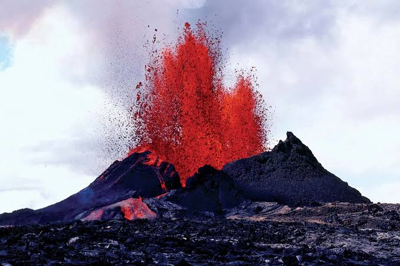
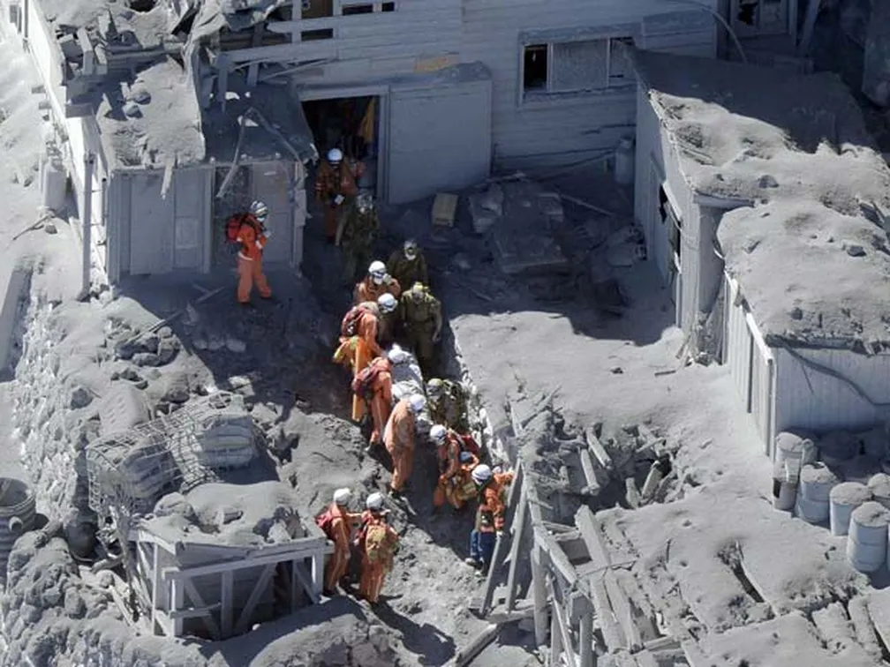
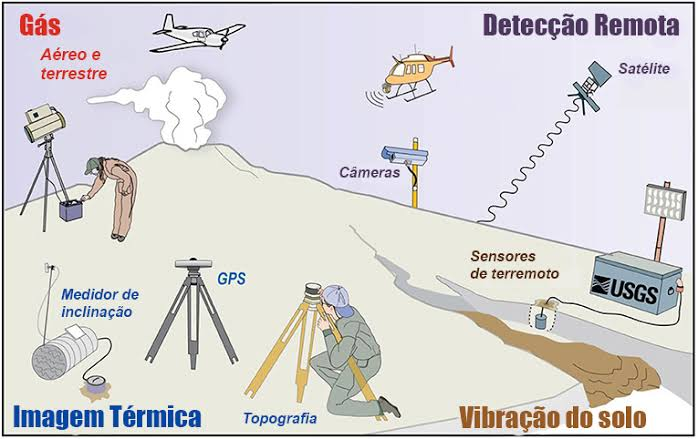
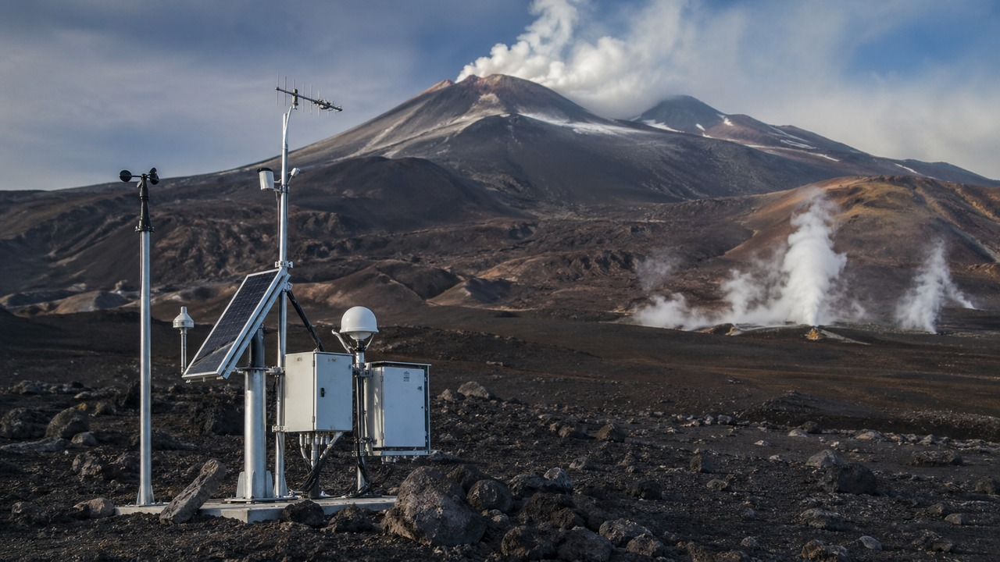
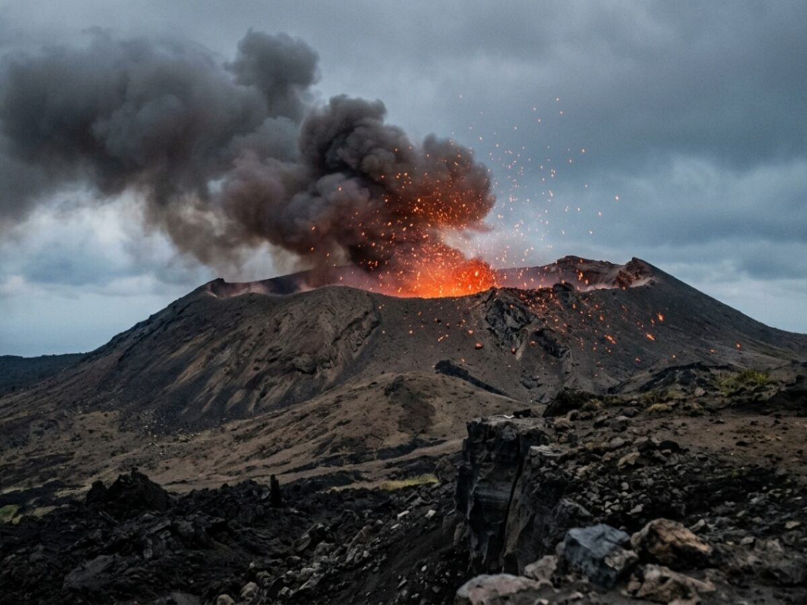
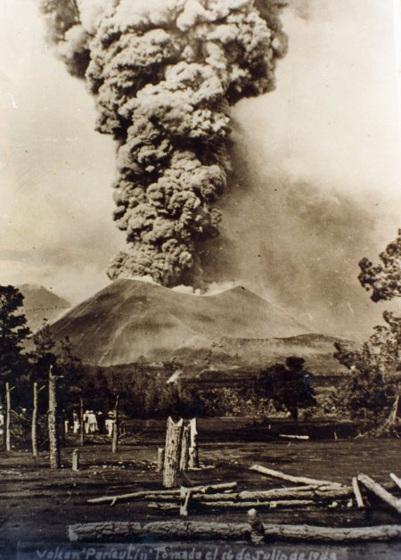
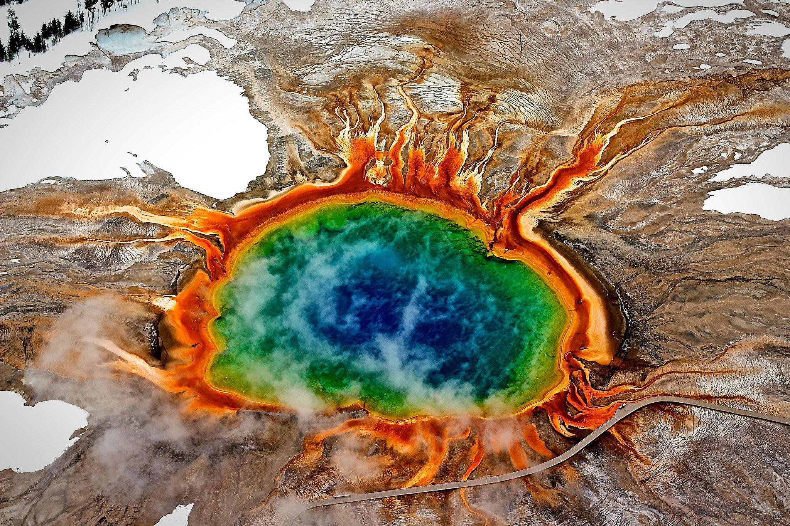

Perguntas
Por que algumas regiões têm mais vulcões?
A distribuição dos vulcões pela Terra não acontece de maneira aleatória. Algumas regiões possuem muitos vulcões porque estão localizadas em áreas onde as placas tectônicas interagem ou onde existe uma grande concentração de calor e material quente no interior do planeta.
A Terra é formada por várias grandes placas de rocha chamadas placas tectônicas, que fazem parte da litosfera e se movimentam lentamente sobre uma camada mais quente e deformável do interior terrestre. Esses movimentos podem provocar a formação de magma e criar caminhos para que ele chegue à superfície, originando vulcões.

-
Limites Convergentes
Em algumas regiões, duas placas tectônicas se movimentam uma em direção à outra. Quando uma placa oceânica encontra outra placa e mergulha para o interior da Terra, ocorre um processo chamado subducção.
A placa que mergulha libera água e outros materiais à medida que aumenta a temperatura e a pressão. Esses componentes favorecem a formação de magma no manto. Como o magma é menos denso que as rochas ao seu redor, ele pode subir em direção à superfície e alimentar vulcões.
Esse processo é responsável por muitos dos vulcões encontrados nas bordas do Oceano Pacífico. Essa região é conhecida como Círculo de Fogo do Pacífico e concentra uma grande quantidade de vulcões e terremotos.
-
Limites Divergentes
Os vulcões também podem aparecer onde duas placas tectônicas estão se afastando. Quando isso acontece, o material quente do manto pode subir para ocupar o espaço deixado pela separação das placas.
Com a diminuição da pressão, parte desse material pode sofrer fusão e formar magma. Quando o magma chega à superfície, ele pode produzir novas rochas e formar uma nova porção de crosta terrestre.
Esse processo acontece principalmente nas dorsais oceânicas, enormes cadeias montanhosas localizadas no fundo dos oceanos. Por isso, existe uma quantidade enorme de atividade vulcânica abaixo dos oceanos, embora grande parte dela não seja visível diretamente.
Pontos Quentes
Nem todos os vulcões estão localizados nos limites das placas tectônicas. Alguns são encontrados no interior delas, sobre regiões chamadas pontos quentes (hotspots). Os pontos quentes são áreas onde existe uma fonte persistente de calor e material quente vindo das profundezas do manto. Quando uma placa tectônica se desloca sobre um ponto quente, o magma pode atravessar a placa e formar um vulcão. Com o movimento contínuo da placa, o vulcão mais antigo pode se afastar da fonte de magma e outro vulcão pode surgir sobre o ponto quente. Esse processo pode formar uma cadeia de vulcões. Um dos exemplos mais conhecidos é o Havaí, onde o movimento da placa do Pacífico sobre um ponto quente contribuiu para a formação de uma cadeia de ilhas vulcânicas.


Fraturas e Regiões mais Frágeis da Crosta
A existência de fraturas e falhas na crosta terrestre também pode facilitar a subida do magma. Essas estruturas funcionam como caminhos pelos quais o magma pode se deslocar do interior da Terra em direção à superfície. Por isso, regiões que apresentam determinadas características geológicas podem ter maior atividade vulcânica do que outras, mesmo quando não estão exatamente sobre um limite de placas.
Por que o Brasil tem poucos Vulcões Ativos?
O Brasil está localizado aproximadamente no centro da Placa Sul-Americana, longe dos principais limites entre placas tectônicas. Por isso, atualmente não possui vulcões ativos conhecidos. Entretanto, isso não significa que o território brasileiro nunca tenha tido vulcões. No passado geológico, diversas áreas do Brasil apresentaram intensa atividade vulcânica. Como essas atividades aconteceram há milhões de anos, os vulcões foram erodidos e hoje encontramos principalmente as rochas e estruturas deixadas por essas antigas erupções.

Como as erupções afetam as pessoas
As erupções vulcânicas podem afetar as pessoas de várias maneiras. Os impactos podem acontecer imediatamente, como em casos de mortes e destruição, ou continuar por bastante tempo, afetando a saúde, a economia e a vida das comunidades.
Entre os principais perigos estão os fluxos piroclásticos, que são misturas muito quentes de gases, cinzas e fragmentos vulcânicos que se deslocam rapidamente; os lahars, que são fluxos de lama e materiais vulcânicos; os tsunamis provocados por explosões ou deslizamentos e a queda de pedras e outros materiais lançados pelo vulcão.
A cinza vulcânica também pode causar problemas respiratórios e irritação nos olhos e na pele. Em pessoas que já possuem problemas respiratórios, a exposição pode agravar os sintomas.
Os gases liberados pelos vulcões também podem ser perigosos em grandes concentrações. Além disso, as cinzas podem contaminar fontes de água, cobrir plantações, prejudicar animais e até causar danos a construções devido ao seu peso.
Outro problema é a interrupção do transporte. Grandes quantidades de cinzas na atmosfera podem prejudicar aviões e também dificultar o transporte pelas estradas.
Depois de uma erupção, muitas famílias ainda precisam lidar com a perda de suas casas, plantações, animais e fontes de renda. O deslocamento para outras regiões também pode causar problemas sociais e psicológicos, principalmente quando as pessoas permanecem longe de suas casas por muito tempo.


Benefícios dos Vulcões
Apesar de as erupções vulcânicas poderem causar grandes impactos sobre as pessoas e o meio ambiente, o vulcanismo também possui diversos efeitos importantes e, em muitos casos, benéficos. Ao longo de milhões de anos, a atividade vulcânica ajudou a formar paisagens, enriquecer solos, criar novas áreas de terra e disponibilizar recursos utilizados pela sociedade.

Formação de Solos Férteis
Um dos principais benefícios dos vulcões está relacionado aos solos vulcânicos. Durante as erupções, vulcões liberam materiais que, com o passar do tempo, sofrem alterações e se incorporam ao solo. Esses materiais podem fornecer elementos importantes para o crescimento das plantas, tornando algumas regiões vulcânicas muito produtivas para a agricultura. Cinzas e rochas vulcânicas podem contribuir para a presença de minerais e nutrientes no solo. Por isso, áreas vulcânicas de diferentes partes do mundo são utilizadas para o cultivo de alimentos.

Criação de Paisagens e Habitats
A atividade vulcânica cria uma grande variedade de ambientes naturais. Vulcões podem formar montanhas, crateras, campos de lava, ilhas, lagos de cratera e outras estruturas geológicas. Com o passar do tempo, plantas e animais podem colonizar essas áreas, criando novos habitats. Em algumas ilhas vulcânicas, por exemplo, a formação de novas terras proporciona ambientes que podem ser ocupados por diferentes espécies.
Como prever uma erupção

Ainda não é possível prever com precisão absoluta o dia e o horário em que um vulcão vai entrar em erupção. Porém, os cientistas conseguem acompanhar vários sinais que podem indicar que uma erupção está se aproximando, principalmente em vulcões que possuem sistemas de monitoramento.
Um dos principais sinais é o aumento da atividade sísmica. Quando o magma se movimenta dentro do vulcão, podem ocorrer vários pequenos terremotos e tremores.
Os cientistas também observam se o solo ao redor do vulcão está se deformando. A movimentação do magma pode fazer com que o vulcão “inche”, e essa alteração pode ser medida com equipamentos como GPS, inclinômetros e imagens de satélite.
Outro sinal importante é a mudança na quantidade e na composição dos gases liberados pelo vulcão, principalmente o dióxido de enxofre e o CO₂. Também podem ser utilizados sensores de temperatura e satélites para identificar mudanças no calor do solo e das áreas próximas às fumarolas.
Atualmente, novas tecnologias, incluindo sistemas de inteligência artificial, também estão sendo usadas para analisar grandes quantidades de dados e identificar padrões que poderiam passar despercebidos.
Ao juntar informações sobre terremotos, deformação do solo, gases, temperatura e outros sinais, os vulcanólogos conseguem avaliar melhor a atividade do vulcão. Isso permite que as autoridades emitam alertas e, quando necessário, organizem evacuações para proteger a população.

Curiosidades
Existem cerca de 1.500 vulcões ativos na Terra, e aproximadamente 70 deles entram em erupção todos os anos.

O maior vulcão conhecido do Sistema Solar fica em Marte: o Monte Olimpo, com cerca de 26 km de altura.

O Mauna Loa, no Havaí, é o maior vulcão ativo da Terra em volume.

O Yasur, em Vanuatu, apresenta atividade eruptiva há mais de 100 anos.

No Kawah Ijen, na Indonésia, o enxofre em combustão pode produzir impressionantes chamas azuis.

O Paricutín, no México, surgiu em 1943 no meio de uma plantação de milho.

A palavra “vulcão” vem de Vulcano, o deus romano do fogo.
O Parque Nacional de Yellowstone, nos Estados Unidos, fica sobre uma enorme caldeira vulcânica associada a um sistema de supervulcão.
